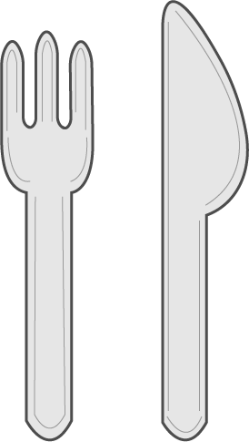
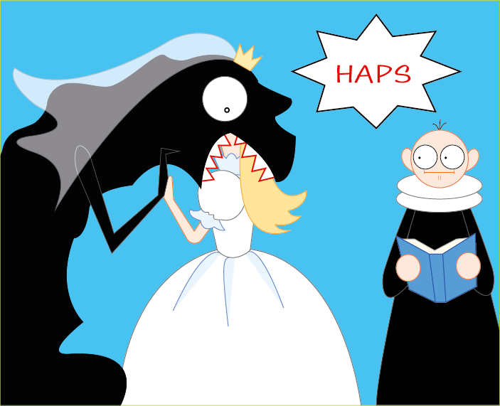
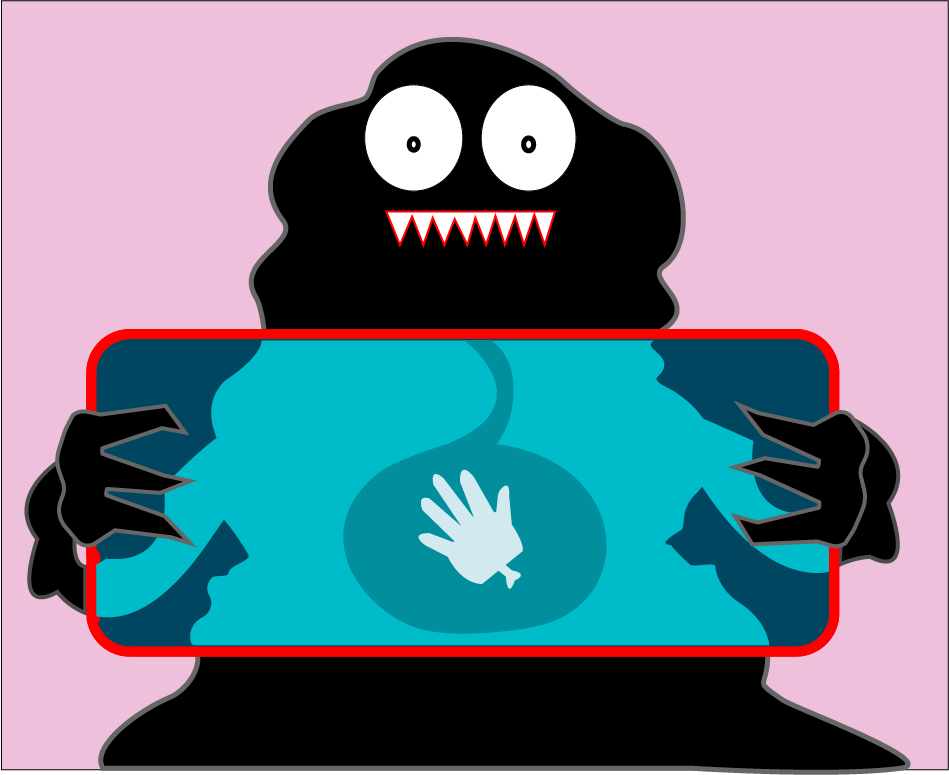

EMERGENCY!
Flere bliver spist af monstre
Flere bliver spist af monstre
Eksperter advarer: Billige huse kan indeholde uønskede beboere.
Romantisk ceremoni endte dramatisk i chok og sult.
Nu kan man få et kig på hvordan der ser ud inde i monstre.
Verdens første X-ray-scanning af et ægte monster er nu offentliggjort, og forskere kalder det et “historisk øjeblik for videnskaben og alle, der nogensinde har hørt mærkelige lyde om natten.” Scanningen giver for første gang et direkte kig ind i et monsters indre, på godt og ondt.
Billedet afslører en overraskende blanding af organer, mystiske strukturer og, mest opsigtsvækkende, en helt almindelig menneskehånd placeret midt i kroppen. Forskerne er enige om, at den “ikke burde være der”, men påpeger, at hånden ser “usædvanligt afslappet ud”.
Offentlighedens reaktioner spænder fra begejstring til bekymring. Nogle ser scanningen som et gennembrud, mens andre frygter, at monstre nu kan kræve journalindsigt og hensyn til deres “medicinske privatliv”.
Forskerholdet lover, at flere monstrøsiteter er på vej til undersøgelse. Næste projekt bliver en MR-scanning af et spøgelse, men holdet mangler stadig både specialudstyr og en villig frivillig, helst en, der ikke blæser væk under forsøget.